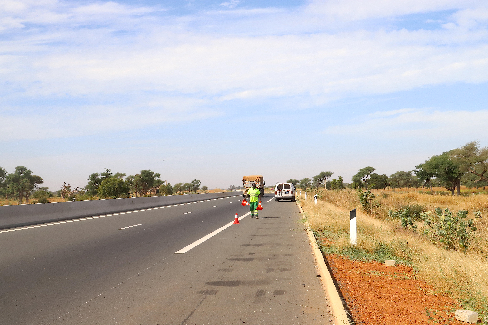
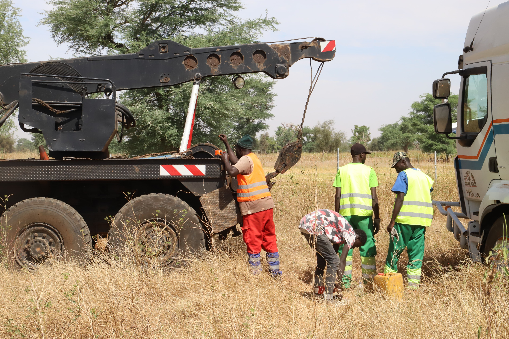
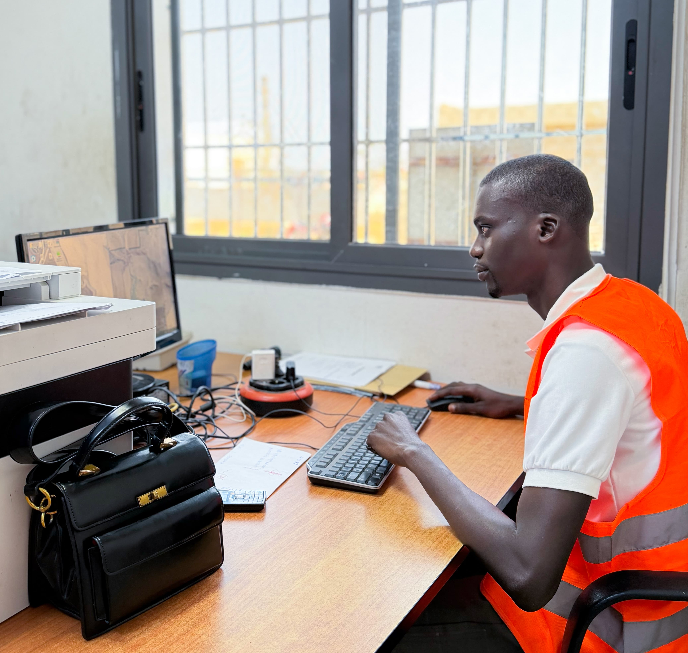

Trois métiers complémentaires pour assurer la sécurité et la fluidité de l'autoroute.
Patrouille, remorquage et répartition : chaque service est conçu pour répondre aux exigences les plus strictes en matière de sécurité routière.

Nos équipes de patrouille assurent une présence permanente sur l'ensemble du tracé de l'autoroute. Leur rôle : prévenir, observer, alerter et intervenir.
Grâce à des véhicules équipés de communication directe avec le centre de répartition, chaque incident est détecté et traité dans les meilleurs délais.

Lorsqu'un véhicule est immobilisé sur l'autoroute — panne, accident ou incident — nos équipes de remorquage interviennent rapidement pour libérer la voie et sécuriser l'usager.
Notre flotte est composée de plusieurs types de véhicules adaptés : dépanneuses légères, plateaux et porte-voitures, capables d'évacuer toutes catégories de véhicules.

Le centre de répartition est le cerveau de notre dispositif. Opérationnel 24h/24, il reçoit les appels, traite les signalements, dispatche les équipes et coordonne toutes les interventions sur le réseau.
Doté d'outils technologiques modernes — radio, GPS, vidéosurveillance — il garantit une réactivité optimale et un suivi minutieux de chaque intervention.